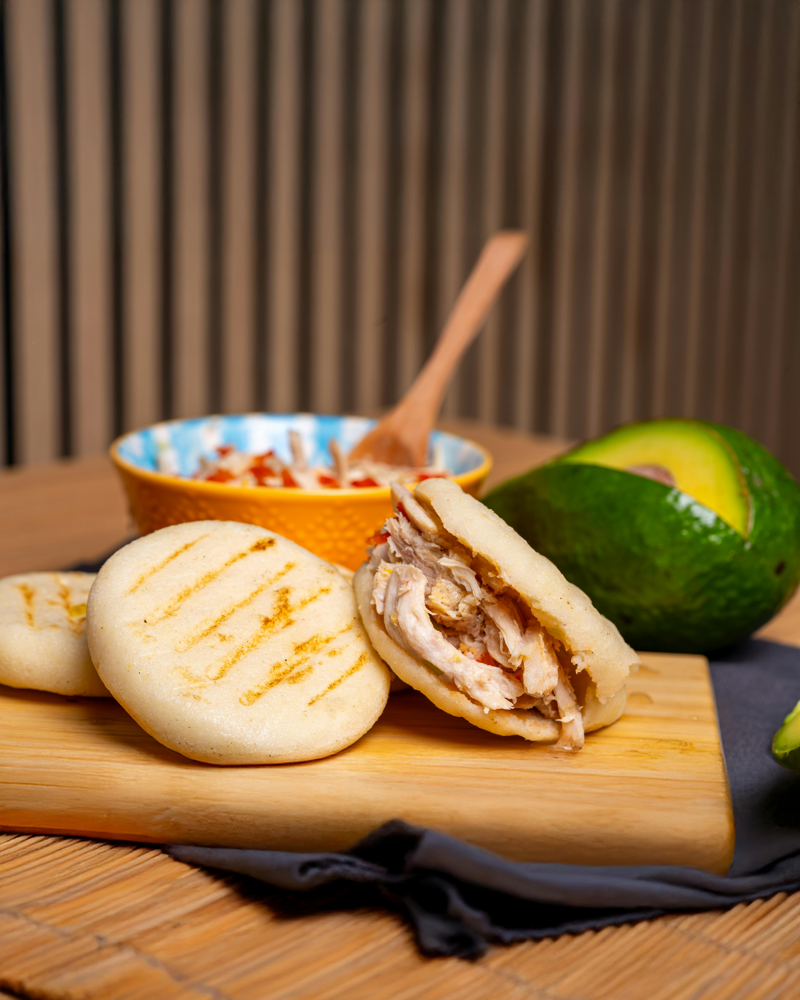

Home
Arepas

What are Arepas?
As a born and raised colmbian, the thought of not knowing what arepas are is borderline blasphemous!
It's an early memory for many of us having our mom or abuella frying these delicious round patties over butter.
Arepas are made primarly of precooked cornmeal, water, and salt, served alongside a protein of choice. But there are some other ingredients as well as ways to cook these arepas that can make them even more delicious.
This recipe will go over everything you need to make this beloved Colombian authentic version of these patties. The beauty of this recipe of Arepas is that the measurements don't really matter!
Everything is to the taste and preferance of the household. So as I go through the instructions make sure to taste your batter until you decide that the taste is to your liking! Following this recipe should give you fifteen patties but can easily be doubled.
What you will need:
Ingredients:
- Precooked Cornmeal
- Water
- Salt
- Shredded Cheese
- White Sugar
- Butter
Steps:
- Pour half a bag of precooked cornmeal into your bowl.
- Put two to three handfuls of your shredded cheese of choice.
- Put a handful of sugar and then a couple pinches of salt. Note: If you prefer sweeter/saltier arepas you can put more sugar or salt to taste, it will not affect the consistency.
- The way you mix your arepas does affect the end result of your arepas. Gradually pour in your water while mixing your arepa batter--preferably with your hands--until you get a dough-like consistency.
- Set your pan to medium with a generous amount of butter, and while it heats up, grab half a fist of dough, flattening it into a disc. Preparing all the dough into discs while waiting might help speed up the process.
- Once your pan is hot enough, place the discs onto the pan until golden brown.
- Serve with your choice of protein or by itself!